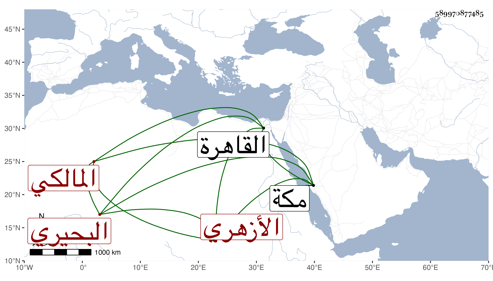

0902Sakhawi.DawLamic.ITO20230111-ara1.EIS1600.589970877485
Biography ID: 589970877485
311
محمد بن يوسف بن عمر الشمس البحيري ثم الأزهري المالكي ويعرف بالخراشي . قدم القاهرة فحفظ القرآن وجوده واشتغل على الزينين عبادة وطاهر وسافر معه إلى مكة وجاور معه ومع غيره وكذا سمع على شيخنا وغيره ومما سمعه الختم في الظاهرية القديمة وتنزل في صوفية سعيد السعداء وغيرها وخطب بمدرسة ابن الجيعان نيابة وكان خيرا سليم الفطرة مديما للحضور عندي في الإملاء وغيره ، وربما حضر عند بعض متأخري المالكية . مات في أوائل شوال سنة ست وثمانين وما أظنه قصر عن السبعين رحمه الله وإيانا .
